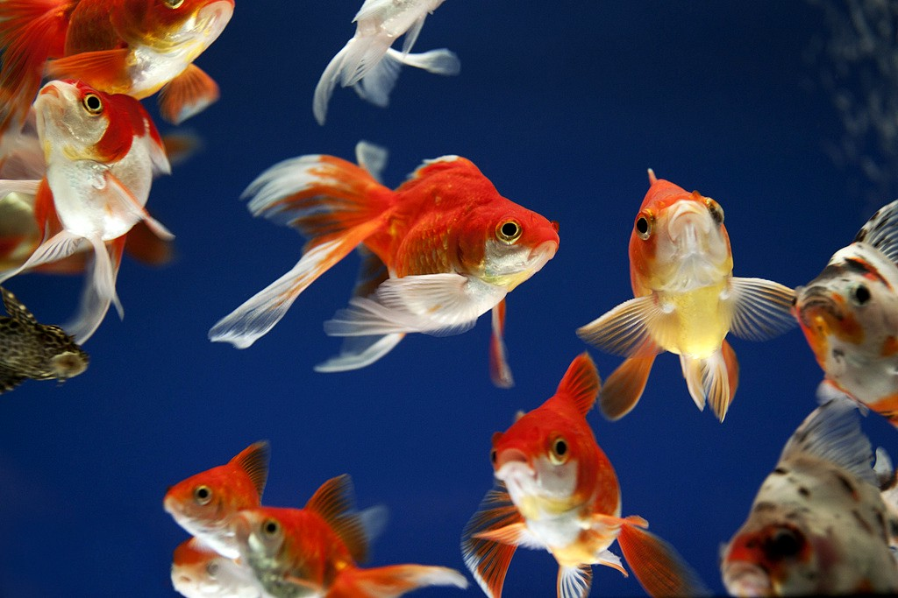
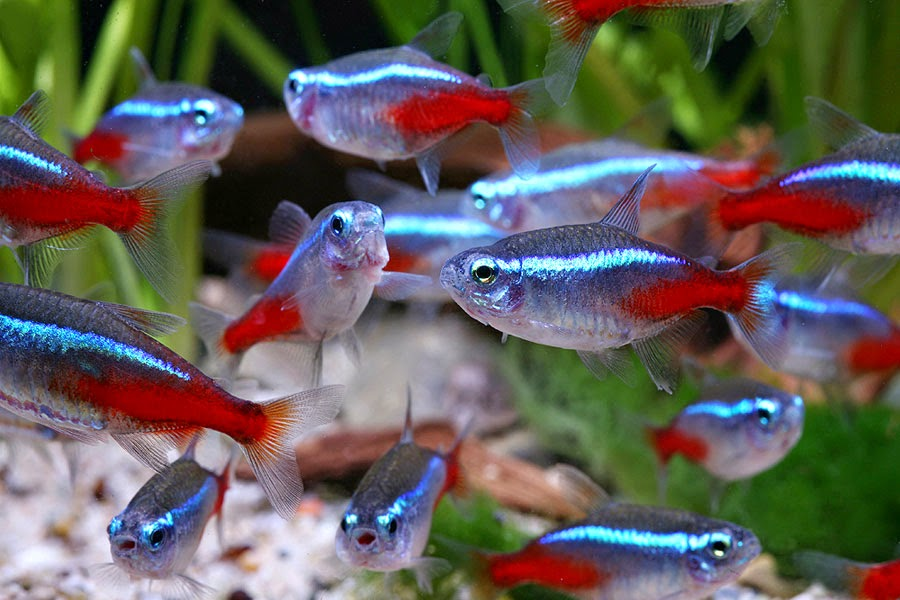
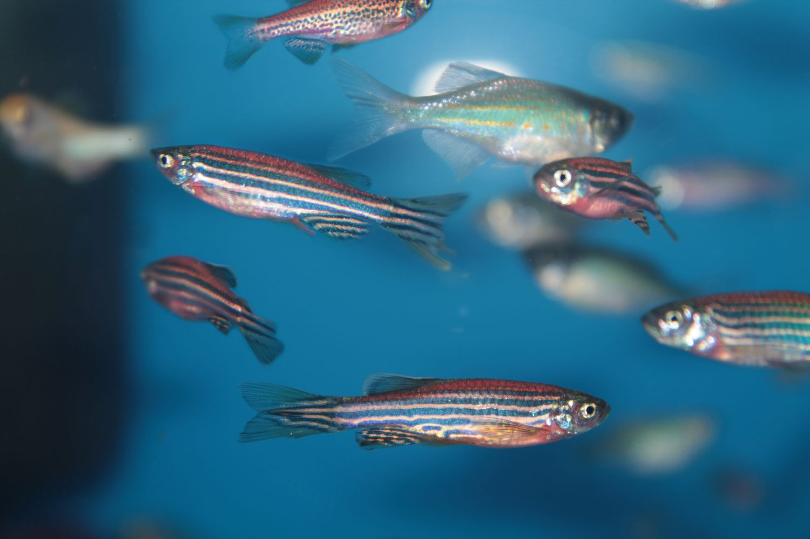
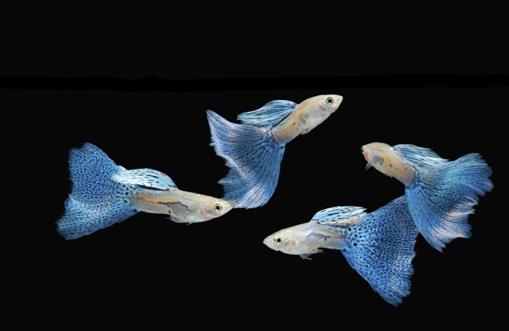
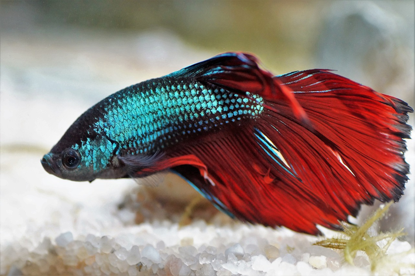
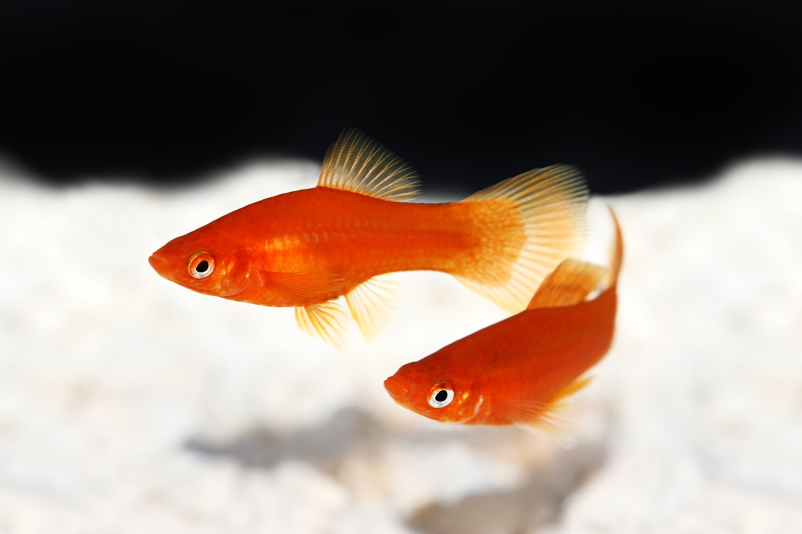

O kinguio é, sem dúvida, o primeiro colocado no ranking de peixes para aquário mais famosos, pois foi uma das primeiras espécies que o homem domesticou e começou a usar no aquarismo e em lagoas privadas. Esta espécie está na família Cyprinidae e é nativa do leste da Ásia. Também chamado de peixinho-dourado ou peixe-japonês, é pequeno em tamanho comparado com outras espécies de carpas, mede aproximadamente 25 cm e se adapta muito bem a diferentes condições ambientais.
O Tetra-neon ou simplesmente neon pertence à família Characidae e é um dos tipos de peixe de aquário mais comuns. Nativo da América do Sul, onde habita o rio Amazonas, o Teatra-neon precisa de temperaturas de água quente, entre 20 e 26 ºC. Além disso, possui características fisiológicas que lhe permitem adaptar-se a águas com altos níveis de ferro e outros metais, o que para outras espécies poderia ser fatal. Isto, somado à sua coloração muito marcante.
O kinguio é, sem dúvida, o primeiro colocado no ranking de peixes para aquário mais famosos, pois foi uma das primeiras espécies que o homem domesticou e começou a usar no aquarismo e em lagoas privadas. Esta espécie está na família Cyprinidae e é nativa do leste da Ásia. Também chamado de peixinho-dourado ou peixe-japonês, é pequeno em tamanho comparado com outras espécies de carpas, mede aproximadamente 25 cm e se adapta muito bem a diferentes condições ambientais.
Nativo do sudeste asiático, o peixe-zebra pertence à família Cyprinidae e é típico de rios, lagos e lagoas. Seu tamanho é muito pequeno, não excedendo 5 cm, com as fêmeas sendo um pouco maiores que os machos e menos alongadas. Tem um desenho com faixas longitudinais azuis nas laterais do corpo, daí seu nome, e parece ter uma cor prateada, mas é praticamente transparente. Eles são muito dóceis, vivem em pequenos grupos e podem coexistir muito bem com outras espécies tranquilas.
Também conhecido como peixe-de-briga-siamês, o peixe betta é uma espécie da família Osphronemidae e é originário do sudeste asiático. É sem dúvida um dos peixes ornamentais de água doce mais impressionantes e belos e um dos tipos de peixe de aquário favoritos para quem pratica o aquarismo. De tamanho médio, seu comprimento é de cerca de 6 cm e tem uma grande variedade de cores e formas de suas barbatanas.
O platy ou plati é um peixe de água doce da família Poeciliidae, nativo da América Central. Como outros membros de sua família, como as molinésias negras e os guppies, esta espécie é muito fácil de cuidar, por isso também é uma excelente companhia para outros peixes para aquario de água.
